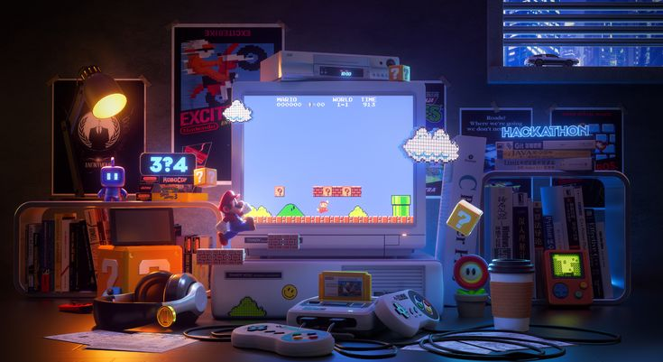

Desde hace ya algún tiempo el trabajo de mis sueños siempre fue haberme convertido en fotógrafa. Sin embargo,
desde la pandemia comenzaron a interesarme los videojuegos, así que investigué lo necesario para desarrollarlos.
Me quise enfocar más en el aspecto lógico que en lo artístico, así que mi interés se fue más hacia la rama de la programación.
| Pasos a seguir | Descripción |
|---|---|
| Paso 1 | Aprender a programar con las herramientas necesarias |
| Paso 2 | Poner en práctica los conocimientos aprendidos |
| Paso 3 | Desarrollar pequeños proyectos y crear un portafolio |
